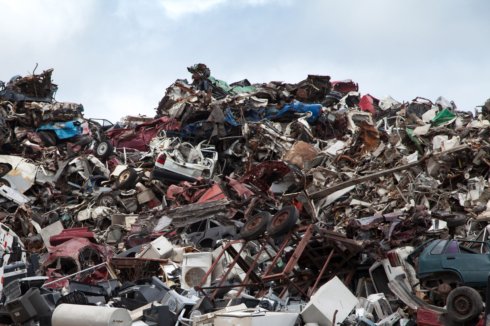

Version Control
Jordan Walker
February 19, 2015
Concepts covered
- Anatomy of a VCS
- General Concepts
- Centralized vs. Distributed
- GitHub and policies
Disclaimer
I'm primarily a Git user
My views and opinions are my own, not to be confused with official policy
YMMV
Anatomy of a Version Control System
Trunk
Branches

Tags
HEAD
By Museo de Almeria (Own work) CC BY-SA 3.0, via Wikimedia Commons{kind=link}
Terms/Jargon
- SCM
- commit
- diff
- merge
- conflict
- revision
- repository
What version control isn't
Then what is it for?
- Source
- Tests
- Documentation
- Build Materials
- Other Resources
Centralized vs. Distributed Version Control
Centralized
- Traditional version control systems (CVS, Subversion, etc.)
- Repository is on server, clients perform commands (commit, checkout, update) directly against server
- Only trusted people may commit, on one authoritative source tree
- Locks are available to ensure that only one user is working on a file at a time
Distributed
- Newer model of version control systems (Git, Mercurial, etc.)
- Repositories are "cloned" and commits are exchanged between repos
- Organization structure determines importance of specific repositories
- Commits can be made remotely and reviewed to add to canonical repo
The story of Git
GitHub

GitHub brought a social element to SCM. This brought about the popularity of Git.
Tips and tricks
- Commit early and often
- Avoid long running branches/merge often
- Establish common workflows
- Tag anything that resembles a release
- Don't commit anything you'd want back
USGS Resources
More Resources
Hello World!
mkdir my-repo
cd my-repo
cat "Hello World!" < file.txt
git init
git add file.txt
git commit -m "Initial Commit"
And it's hosted
git remote add origin git@github.com:jiwalker-usgs/demo.git
git push origin master